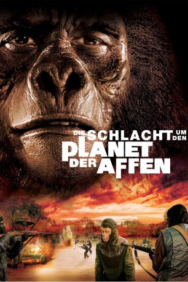

#4927 Die Schlacht um den Planet der Affen
Alternativ: Battle for the Planet of the Apes
 
 IMDB-Wertung: 5.5 / 10
IMDB-Wertung: 5.5 / 10  Metascore: 0
Metascore: 0 
Nach der Revolution, die Caesar im vorigen Teil angezettelt hatte, leben Menschen und Affen friedlich zusammen. Jetzt will er mehr über die Geschichte seiner Eltern wissen und begibt sich dazu in die “verbotene Stadt”. Dieser Ort ist allerdings radioaktiv verseucht und wird von mutierten Affen bewohnt, die es nicht gut mit den Eindringlingen meinen.
Jahr: 1973
Dauer: 86 Minuten
FSK: 12
Land: USA Studio: 20th Century FoxTonspuren: DTS - ,
Untertitel: Deutsch,
Auflösung: 1080p (1920x816) Größe: 7680 MB
Genre: Action, Sci-Fi
Regisseur: J. Lee Thompson
Drehbuch: Steve Koren
Soundtrack:
Darsteller:
 Roddy McDowall als Caesar / Cornelius
Roddy McDowall als Caesar / Cornelius Claude Akins als General Aldo
Claude Akins als General Aldo Natalie Trundy als Lisa
Natalie Trundy als Lisa Lew Ayres als Mandemus
Lew Ayres als Mandemus Paul Williams als Virgil
Paul Williams als Virgil- Austin Stoker als MacDonald
- France Nuyen als Alma
- Bobby Porter als Cornelius
- Pat Cardi als Young Chimp
 John Landis als Jake's Friend
John Landis als Jake's Friend John Huston als The Lawgiver
John Huston als The Lawgiver Eric Braeden als Dr. Otto Hasslein , archive footage, uncredited
Eric Braeden als Dr. Otto Hasslein , archive footage, uncredited Colleen Camp als Julie - Lisa's Servant , uncredited
Colleen Camp als Julie - Lisa's Servant , uncredited Kim Hunter als Dr. Zira , archive footage, uncredited
Kim Hunter als Dr. Zira , archive footage, uncredited Lou Wagner als Busboy , archive footage, uncredited
Lou Wagner als Busboy , archive footage, uncredited- Severn Darden als Governor Kolp
- Noah Keen als Abe the teacher
- Richard Eastham als Mutant Captain
- Paul Stevens als Mendez
- Heather Lowe als Doctor
- Michael Stearns als Jake
- Cal Wilson als Soldier
- Andy Knight als Mutant on Motorcycle
- James Bacon als Gorilla Soldier , uncredited
- Paula Crist als Girl in Corral , uncredited
- Jimmy Gambina als Orangutan , uncredited
- David Gerrold als Chimp , uncredited
- Dominique Green als Female Ape , uncredited
- Sam Maronie als Mutant Technician , uncredited
Datei: X:\7+mehr(A-Z)\Planet der Affen\5 Schlacht um den Planet der Affen, Die (1973, FSK12, 1920x816).mkv seit 02.12.2016
Festplatte: HD Collection-7+mehr(A-Z)+Person
 Es gibt insgesamt 14 Filme in der Gruppe '7+mehr(A-Z)\Planet der Affen'
Es gibt insgesamt 14 Filme in der Gruppe '7+mehr(A-Z)\Planet der Affen'